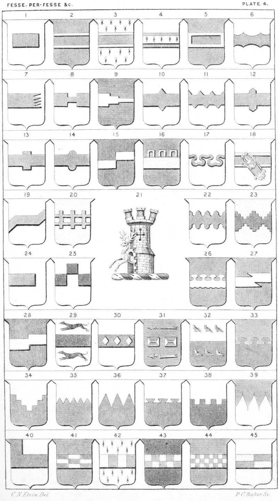

Plate 4.

Plate 4.
- Fesse Humettee, or couped. Ar. a fesse humettee gu.
- Fesse Voided, Sarcelle, or Recoursie. Gu. a fesse ar. voided of the field
- Fesse Edged
- Fesse surmounted of another
- Fesse Bordered, or Fimbriated
- Fesse Nuee, or Nuage
- Fesse Eradicated, or Esclatte
- Fesse Escartele, or Escloppe
- Fesse Griece, Grady of three to the sinister, or Double escartelee
- Fesse Nowy, lozengy
- Fesse Indentee
- Fesse Nowy, Champaine, or urdee
- Fesse Nowy, quadrate
- Fesse Bottony, pometty, or nowy
- Fesse Debruised, fracted, or removed
- Fesse Ajoure
- Fesse Wiure, nebulee counter nebulee, or wiure nebule counter-nebulee fixed in fesse
- Fesse of a Demi-belt, or a demi-belt fixed in fesse
- Fesse Double-beviled
- Fesse Bretessed, embattled-parted, or double-parted
- Fesse Crest of Ireland. A Tower triple-towered or, from the portal a hart springing ar. attired and hoofed gold
- Fesse Champaine, Urdee, or Warriated
- Fesse Embattled-grady, or Escartele grady
- Fesse Demi, or Demi fess
- Fesse Rompu, coppee, coupe, or double-downset
- Fesse Nebulee on the top, and In-
- Fesse vecked on the bottom
- Fesse Beviled
- Fesse Rectangled, or angled
- Fesse between two greyhounds courant
On a fesse three lozenges
- Fesse Az. two combs in fesse betw. a broken lance fesseways (or barways) or, one piece in chief the head respecting the dexter, the other half towards the sinister in base. Lombe
- Fesse Per-fesse ar, and gu. six martlets countercharged. Fenwick
- Fesse Per-fesse Nebuly az. and gu. Baker
- Fesse Per-fesse, Escartelle, grady of
three
- Fesse Per-fesse Indented
- Fesse Per-fesse Dancette
- Fesse Per-fesse Dovetail
- Fesse Per-fesse Crenelle
- Fesse Bar, per base, erased
- Fesse and Canton conjoined
- Fesse Billettee counter-billette
- Fesse Compony
- Fesse Counter-compony
- Fesse Chequy
- Fesse Quarterly